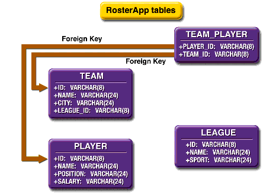
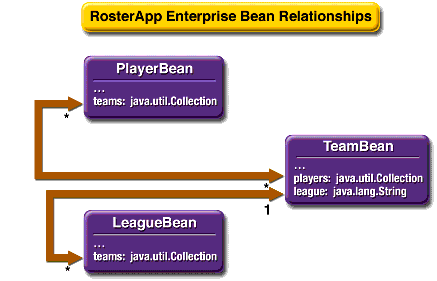

Building and Running the RosterApp Example
Now that you understand the structure of the
RosterAppexample EAR file, you will assemble the enterprise application and the application client and then run the example. This section gives detailed instructions on how to build and run theRosterAppexample, which is located at<INSTALL>/j2eetutorial14/examples/ejb/cmproster/.Creating the Database Tables
The
RosterAppapplication uses the database tables shown in Figure 27-2.

Figure 27-2 Database Tables in
RosterAppThe instructions that follow explain how to use the
RosterAppexample with Derby, the database software that is included in the Application Server bundle.
Note: Application Server 8.2 includes a copy of the open source Derby database server. Application Server 8.0/8.1 includes the PointBase database server. If you are using Application Server 8.0/8.1, either follow the instructions in the J2EE Tutorial at
http://java.sun.com/j2ee/1.4/docs/tutorial-update6/doc/index.htmlthat works with Application Server 8.0/8.1 or upgrade to Application Server 8.2 (seehttp://java.sun.com/j2ee/1.4/download.html#appservto download).
Creating the Data Source
You must create the
jdbc/ejbTutorialDBdata source. For instructions on creating this resource in the Admin Console, see Creating a Data Source.Capturing the Table Schema
You will now create a database schema file, which will allow you to map fields from the enterprise beans to columns in the database tables created earlier.
The
capture-db-schematask calls thecapture-schemautility to output an XML file,cmproster.dbschema, which represents the structure of the database tables you created in Creating the Database Tables. Thecmproster.dbschemafile will be used to automatically map the enterprise bean fields to database columns.The command that's called when you run the
capture-db-schematask is as follows:capture-schema -dburl jdbc:derby://localhost:1527/sun-appserv-samples -username APP -password APP-table LEAGUE -table PLAYER -table TEAM -table TEAM_PLAYER -schemaname APP -driver org.apache.derby.jdbc.ClientDriver -out build/cmproster.dbschemaBuilding the Enterprise Beans
You will now build the enterprise beans.
Creating the Enterprise Application
Create a new application in
deploytoolcalledRosterApp.Packaging the Enterprise Beans
You will now package the four enterprise beans:
RosterBean,LeagueBean,PlayerBean, andTeamBean. Note thatRosterBean, a stateful session bean, will be packaged inRosterJAR. The others (LeagueBean,PlayerBean, andTeamBean) are entity beans using container-managed persistence, and will be packaged inTeamJAR.Packaging RosterBean
RosterBeanis a stateful session bean that accesses the data in the entity beans. Clients will access and manipulate that data throughRosterBean.Packaging LeagueBean, PlayerBean, and TeamBean
To package
LeagueBean,PlayerBean, andTeamBean, follow these steps:
Note: Be sure to enter the correct name in the Enterprise Bean Name field for
LeagueBean,PlayerBean, andTeamBeanto allow the automatic mapping of persistent fields and relationships.
- In the Entity Settings screen:
- In the Persistence Management Type field, select Container-Managed Persistence (2.0).
- In the Fields To Be Persisted frame, check
name,leagueId, andsport.- In the Abstract Schema Name field, enter
League.- In the Primary Key Class field, choose Select an Existing Field.
- Select
leagueId[java.lang.String].- Click Next.
- Click Finish.
Now we'll add
PlayerBeantoTeamJAR.
- Create a new enterprise bean in
TeamJARby selecting FileNew
- In the EJB JAR screen:
- In the General screen:
- In the Entity Settings screen:
- In the Persistence Management Type field, select Container-Managed Persistence (2.0).
- In the Fields To Be Persisted frame, check
name,position,playerId, andsalary.- In the Abstract Schema Name field, enter
Player.- In the Primary Key Class field choose Select an Existing Field.
- Select
playerId[java.lang.String].- Click Next.
- Click Finish.
Now we'll add
TeamBeantoTeamJAR.
- Create a new enterprise bean in
TeamJARby selecting File- In the EJB JAR screen:
- In the General screen:
- In the Entity Settings screen:
- In the Persistence Management Type field, select Container-Managed Persistence (2.0).
- In the Fields To Be Persisted frame, check
name,teamId, andcity.- In the Abstract Schema Name field, enter
Team.- In the Primary Key Class field, choose Select an Existing Field.
- Select
teamId[java.lang.String].- Click Next.
- Click Finish.
Adding EJB QL Queries to PlayerBean
PlayerBeancontains finder and selector methods that use EJB QL queries. These steps will add the appropriate EJB QL queries to the methods. See Chapter 29 for more details.
- Select
PlayerBeanin the tree indeploytool.- Select the Entity tabbed pane.
- Click Find/Select Queries.
- In Show Local Finders:
- For the
findAllmethod, enter
select object(p) from Player p- For the
findByCitymethod, enter
select distinct object(p) from Player p,in (p.teams) as t
where t.city = ?1- For the
findByHigherSalarymethod, enter
select distinct object(p1)
from Player p1, Player p2
where p1.salary > p2.salary and
p2.name = ?1- For the
findByLeaguemethod, enter
select distinct object(p) from Player p,
in (p.teams) as t
where t.league = ?1- For the
findByPositionmethod, enter
select distinct object(p) from Player p
where p.position = ?1- For the
findByPositionAndNamemethod, enter
select distinct object(p) from Player p
where p.position = ?1 and p.name = ?2- For the
findBySalaryRangemethod, enter
select distinct object(p) from Player p
where p.salary between ?1 and ?2- For the
findBySportmethod, enter
select distinct object(p) from Player p,
in (p.teams) as t
where t.league.sport = ?1- For the
findByTestmethod, enter
select distinct object(p) from Player p
where p.name = ?1- For the
findNotOnTeammethod, enter
select object(p) from Player p
where p.teams is empty- In Show Select Methods:
- Click OK.
- Select File
Establishing Relationships between Enterprise Beans
TeamJARhas the relationships shown in Figure 27-3.

Figure 27-3 Relationships between Enterprise Beans in
TeamJARRelationships should always be mapped to the primary key field(s) of the related table.
To create the container-managed relationships between the enterprise beans, do the following:
- Select
TeamJARin the tree indeploytool.- Select the Relationships tabbed pane.
- Click Add.
- In the Add Relationship dialog box:
- Click Add.
- In the Add Relationship dialog box:
Creating the Field and Relationship Mappings
To set the container-managed fields and relationships, do the following:
Setting RosterBean's Transaction Attributes
Setting the Enterprise Bean References
First, you'll set the enterprise bean reference for
ejb/SimpleLeague.
- Select
RosterBeanindeploytool's tree.- Click the EJB Ref's tabbed pane.
- Click Add.
- In the Add Enterprise Bean Reference dialog box:
- In the Coded Name field, enter
ejb/SimpleLeague.- In the EJB Type field, select
Entity.- In the Interfaces field, select
Local.- In the Home Interface field, enter
team.LocalLeagueHome.- In the Local/Remote Interface field, enter
team.LocalLeague.- Under Target EJB, select
ejb-jar-ic1.jar#LeagueBeanin the Enterprise Bean Name drop-down list.- Click OK.
Next, you'll set the enterprise bean reference for
ejb/SimplePlayer.
- Click Add.
- In the Add Enterprise Bean Reference dialog box:
- In the Coded Name field, enter
ejb/SimplePlayer.- In the EJB Type field, select
Entity.- In the Interfaces field, select
Local.- In the Home Interface field, enter
team.LocalPlayerHome.- In the Local/Remote Interface field, enter
team.LocalPlayer.- Under Target EJB, select
ejb-jar-ic1.jar#PlayerBeanin the Enterprise Bean Name drop-down list.- Click OK.
Finally, you'll set the enterprise bean reference for
ejb/SimpleTeam.
- Click Add.
- In the Add Enterprise Bean Reference dialog box:
- In the Coded Name field, enter
ejb/SimpleTeam.- In the EJB Type field, select
Entity.- In the Interfaces field, select
Local.- In the Home Interface field, enter
team.LocalTeamHome.- In the Local/Remote Interface field, enter
team.LocalTeam.- Under Target EJB, select
ejb-jar-ic1.jar#TeamBeanin the Enterprise Bean Name drop-down list.- Click OK.
- Select File
Packaging the Enterprise Application Client
To package the application client, do the following:
Setting the Enterprise Bean Reference
You must map the coded JNDI name in the client to the
RosterBeanstateful session bean. To do this, follow these steps:
- Select RosterClient in
deploytool's tree.- Select the EJB Ref's tabbed pane.
- Click Add.
- In the Add Enterprise Bean Reference dialog box:
- In the Coded Name field enter
ejb/SimpleRoster.- In the EJB Type field, select
Session.- In the Interfaces field, select
Remote.- In the Home Interface field, enter
roster.RosterHome.- In the Local/Remote Interface field, enter
roster.Roster.- Under Target EJB, select JNDI Name.
- Select
RosterBeanunder JNDI Name.- Click OK.
- Select File
Deploying the Enterprise Application
You can now deploy the enterprise application by following these steps:
- Select Tools
- In the Deploy Module
RosterAppdialog box enter the user name and password.- Under Application Client Stub Directory, check Return Client Jar.
- Confirm that the path in the field below the checkbox is
<INSTALL>/j2eetutorial14/examples/ejb/cmproster/. If it isn't, click Browse and navigate to<INSTALL>/j2eetutorial14/examples/ejb/cmproster/build/.- Click OK.
- Confirm that the application deployed and started correctly and that the client stub JAR was created at
<INSTALL>/j2eetutorial14/examples/ejb/cmproster/build/.- Click Close.
Running the Client Application
To run the client, follow these steps:
- In a terminal, go to
<INSTALL>/j2eetutorial14/examples/ejb/cmproster/.- Type the following command:
appclient -client RosterAppClient.jar- In the terminal window, the client displays the following output:
P7 Rebecca Struthers midfielder 777.0
P6 Ian Carlyle goalkeeper 555.0
P9 Jan Wesley defender 100.0
P10 Terry Smithson midfielder 100.0
P8 Anne Anderson forward 65.0
T2 Gophers Manteca
T5 Crows Orland
T1 Honey Bees Visalia
P2 Alice Smith defender 505.0
P5 Barney Bold defender 100.0
P25 Frank Fletcher defender 399.0
P9 Jan Wesley defender 100.0
P22 Janice Walker defender 857.0
L1 Mountain Soccer
L2 Valley Basketball
Note: Re-create the database tables using the
create-db_commontask before re-running the client.
All of the material in The J2EE(TM) 1.4 Tutorial is copyright-protected and may not be published in other works without express written permission from Sun Microsystems.